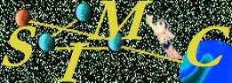

In association with the 12th European Conference on Object-Oriented
Programming (ECOOP'98)
21 July 1998, Brussels, Belgium.
http://cuiwww.unige.ch/~ecoopws
Final Program
10:20 - 10:35 Mobile Agent Security, R. Gray (Dartmouth College, U.S.A.). (Slides of talk).
10:35 - 10:50 A Multi-level Interface Structure for the Selective Publication of Services in an Open Environment, J. Hulaas, A. Villazon, J. Harms (University of Geneva, Switzerland). (Slides of talk).
10:50 - 11:05 A Practical Demonstration of the Effect of Malicious Mobile Agents on CPU Load Balancing, A. Greenaway, G. McKee (University of Reading, UK). (Slides of talk).
11:05 - 11:30 Role-Based Protection and Delegation for Mobile Object Environments, N. Negaratnam (Syracuse University, USA), D. Lea (SUNY Oswego, USA).
11:30 - 11:55 Coarse-grained Java Security Policies, T. Jensen, D. LeMetayer, T. Thorn (INRIA, France)
11:55 - 12:30 Discussion Period.
14:00 - 14:25 A Model of Attacks of Malicious Hosts Against Mobile Agents, F. Hohl (University of Stuttgart, Germany). (Slides of talk).
14:25 - 14:40 Agent Trustworthiness L. Kassab (Naval Research Laboratory, U.S.A.), J. Vaos (Reliable Software Technologies, USA). (Slides of talk).
14:40 - 15:05 Protecting the Itinerary of Mobile Agents, U. Wilhelm, S. Staamann, L Buttyan (EPFL-Lausanne, Switzerland). (Slides of talk).
15:05 - 15:30 Secure Recording of Itineraries through Cooperating Agents, V. Roth (IGD - Darmstadt, Germany)
15:30 - 15:45 Position Paper: Security in Tacoma, N. Sudmann (University of Tromso, Norway). (Slides of talk).
16:00 - 16:25 Type-Safe Execution of Mobile Agents in Anonymous Networks, M. Hennessy, J. Riely (University of Sussex, UK). (Slides of talk).
16:25 - 16:40 Mobile Computations and Trust, V. Swarup (The Mitre Corporation, USA).
16:40 - 17:05 Case Studies in Security and Resource Management for Mobile Objects, Open Group Research Institute (OGR) & University of Illinois (I), D. Milojicic (OGR), G. Agha (I), P. Bernadat (OGR), D. Chauhan (OGR), S. Guday (OGR), N. Jamali (I), D. Lambright (OGR). (Slides of talk).
17:05 - 17:20 Environmental Security: Apoptotic Functions and a Way to Protect Them, Christian Tschudin (University of Zurich, Switzerland). (Slides of talk).